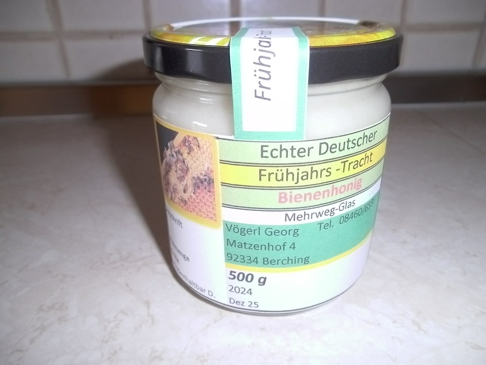
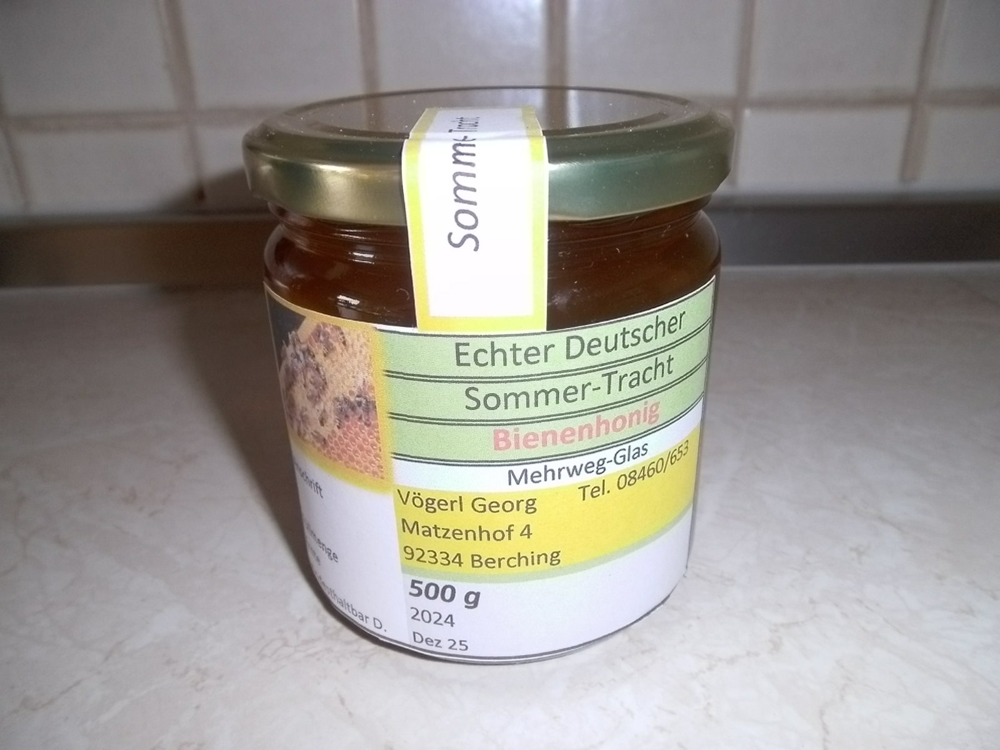
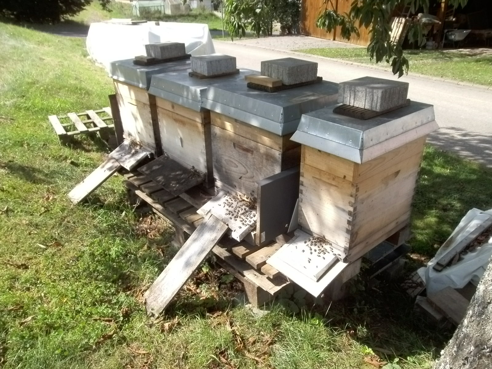

Bienen_von Vögerl Georg
|
Honig vom Imker. |
|
| Bienenhonig ist ein köstlichen Naturprodukt, das von den Honigbienen aus dem Nektar von Blüten hergestellt wird. | |
| Die fleißigen Bienen sammeln den Nektar , tragen ihn in den Bienenstock und verarbeiten ihn zu Honig. | |
| Dieser süße Sirup ist nicht nur lecker , sondern auch reich an Nährstoffen und Antioxidantien . | |
| Wusstest du, dass Honig seit Jahrtausenden als Süßungsmittel, Heilmittel , und sogar als kosmetischen Produkt | |
| verwendet wird ? Hier sind einige interessante Fakten über Bienenhonig. | |
|
------- Vielfältige Sorten. Es gibt viele verschiedene Sorten von Honig, je nachdem, welche Blumen die Bienen |
|
| besucht haben. Zum Beispiel Akazienhonig, Lavendelhonig, Kastanienhonig und viele mehr. | |
| ------- Gesundheitsvorteile: Honig enthält Enzyme, Vitamiene, Mineralstoffe und Antioxidanten. Er kann bei | |
| Halsschmerzen, Husten und als Energiequelle dienen. Außerdem wird Honig oft zur Wundheilung verwendet. | |
| ------- Lokale Produktion: Viele Regionen haben ihre eigenen einzigartigen Honigsorten, die den Charakter der | |
| dortigen Flora widerspiegeln. | |
| ------- Honigbienen sind unverzichtbar: Bienen bestäuben nicht nur Blumen sondern sind auch für die Bestäubung | |
| von Nutzpflanzen wie Obstbäume und Gemüse unerlässlich. | |
| Also, wenn du das nächste Mal Honig genießt, denke daran, dass es ein erstaunliches Produkt ist ,das von | |
| fleißigen Bienen geschaffen wird ! | |
|
Ein Hinweis ! |
|
| Honig kristallisiert mit der Zeit, Sie können festen Honig im Warmwasserbad (bis 40°) wieder verflüssigen . | |
| Essen Sie Honig vom Imker , denn heimische Bienen erhalten die Natur. --------- Ihr Beitrag zum Umweltschutz. | |
| Standort | 92334 Berching |
| Preis ----500g | € 6,00 |
| Kontakt | |
| voegerl@freenet.de | |
| Telefon | |


